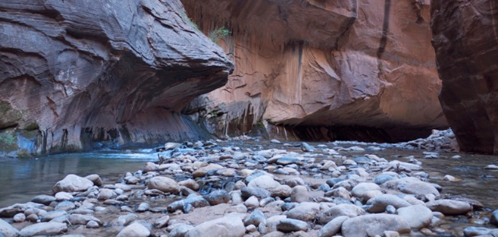
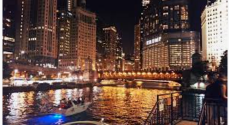

skip to main
Travel
Jungfrau Switzerland


Geographical Location: Europe
Jungfrau is a city in Switzerland known for its mountain summits nicknamed the “top of Europe.” It is very famous also for its railway created in 1912 that can bring you to a height of 3454m. At the summit there are outstanding views where you can see the whole city and beyond.
The scenery consists of valleys, waterfalls, rock walls, and snow peaks. When visiting, it is vital to go on a day with good weather because it enhances the quality of the views. Hiking is very popular at short trails called Grutschalp and Murren. A very common tourist attraction is also exploring the Lauterbrunnen valley.
Photo Gallery


Zion National Park

Geographical Location: North America
Found in southwestern Utah, Zion National Park spreads over 229 square miles. The park is known for its sandstone cliffs, deep canyons, and vast mesas, giving it a unique beauty that everyone should try to experience. Along with this Zion offers a wide variety of Flora and Fauna that differs each season making it a hot destination all year round.
Having over 112 trails available to hike, walk, and even camp at, people from all over the world are traveling to Zion to see just how amazing it truly is. With trails that range from riverside walks all the way to hikes that have you scaling long bluffs to reach a peak, Zion has something that every outdoorsman can enjoy. However it is not all sunshines and rainbows, and there are dangers that come with these trails that all hikers should read and learn about before their expedition.
Photo Gallery

{kind=link}

{kind=link}
{kind=link}
Chicago

Geographical Location: United States, Illinois
Chicago, known as the Windy City, is the third most populous city in the United States. Located in Illinois, it is famous for its rich history, diverse culture, and vibrant arts scene.
Tourists and locals alike should exercise caution in certain areas of the city. For insights into challenges faced by Chicago, you can visit Chicago Safety Concerns or Chicago Scanner on Instagram.
Photo Gallery
{kind=link}
{kind=link}
{kind=link}
{kind=link}
Rome, Italy


Geographical Location: Europe
The national capital of Italy remains a historical and political hub today. Nicknamed the “Eternal City,” Rome is considered the origination of the Catholic Church and Roman civilization central to the development of the Western World. Divided into 22 walled rioni (districts) surrounded by 35 quartieri urbani (urban sectors) that are surrounded by 6 large suburbi (suburbs), the city, just larger than New York City at an area of 496 mi2, is home to 2.8 million residents. Its economy runs on the tourism and services industries, the latter mostly in government jobs.
The Via del Corso, named after Roman carnival horse races, is the main street that runs through Rome. Many significant churches, palaces, and squares run along this road (Piazza del Popolo, and the Spanish Steps in Piazza di Spagna, for example). The seven hills that surround Rome are trenched with mythological history which can be seen through the prevalence of temples. Must see landmarks for those traveling include the Colosseum, Roman Forum, Pantheon, and Catacombs. St. Peter’s Square & Basilica and the Sistine Chapel, technically located within Vatican City – an independent city-state within Rome – are also worth a visit.
Photo Gallery
{kind=link}